If the natural ggplot2 equivalent to nodes is geom_point(), then surely the equivalent to edges must be geom_segment()? Well, sort of, but there’s a bit more to it than that.

One does not simply draw a line between two nodes
While nodes are the sensible, mature, and predictably geoms, edges are the edgy (sorry), younger cousins that pushes the boundaries. To put it bluntly:
On the ggraph savannah you definitely want to be an edge!
Meet the geom_edge_*() family
While the introduction might feel a bit over-the-top it is entirely true. An edge is an abstract concept denoting a relationship between two entities. A straight line is simply just one of many ways this relationship can be visualised. As we saw when discussing nodes sometimes it is not drawn at all but impied using containment or position (treemap, circle packing, and partition layouts), but more often it is shown using a line of some sort. This use-case is handled by the large family of edge geoms provided in ggraph. Some of the edges are general while others are dedicated to specific layouts. Let’s creates some graphs for illustrative purposes first:
library(ggraph)
library(tidygraph)
library(purrr)
library(rlang)
set_graph_style(plot_margin = margin(1,1,1,1))
hierarchy <- as_tbl_graph(hclust(dist(iris[, 1:4]))) %>%
mutate(Class = map_bfs_back_chr(node_is_root(), .f = function(node, path, ...) {
if (leaf[node]) {
as.character(iris$Species[as.integer(label[node])])
} else {
species <- unique(unlist(path$result))
if (length(species) == 1) {
species
} else {
NA_character_
}
}
}))
hairball <- as_tbl_graph(highschool) %>%
mutate(
year_pop = map_local(mode = 'in', .f = function(neighborhood, ...) {
neighborhood %E>% pull(year) %>% table() %>% sort(decreasing = TRUE)
}),
pop_devel = map_chr(year_pop, function(pop) {
if (length(pop) == 0 || length(unique(pop)) == 1) return('unchanged')
switch(names(pop)[which.max(pop)],
'1957' = 'decreased',
'1958' = 'increased')
}),
popularity = map_dbl(year_pop, ~ .[1]) %|% 0
) %>%
activate(edges) %>%
mutate(year = as.character(year))Link
While you don’t have to use a straight line for edges it is certainly possible and geom_edge_link() is here to serve your needs:

There’s really not much more to it — every edge is simply a straight line between the terminal nodes. Moving on…
Fan
Sometimes the graph is not simple, i.e. it has multiple edges between the same nodes. Using links is a bad choice here because edges will overlap and the viewer will be unable to discover parallel edges. geom_edge_fan() got you covered here. If there are no parallel edges it behaves like geom_edge_link() and draws a straight line, but if parallel edges exists it will spread them out as arcs with different curvature. Parallel edges will be sorted by directionality prior to plotting so edges flowing in the same direction will be plotted together:
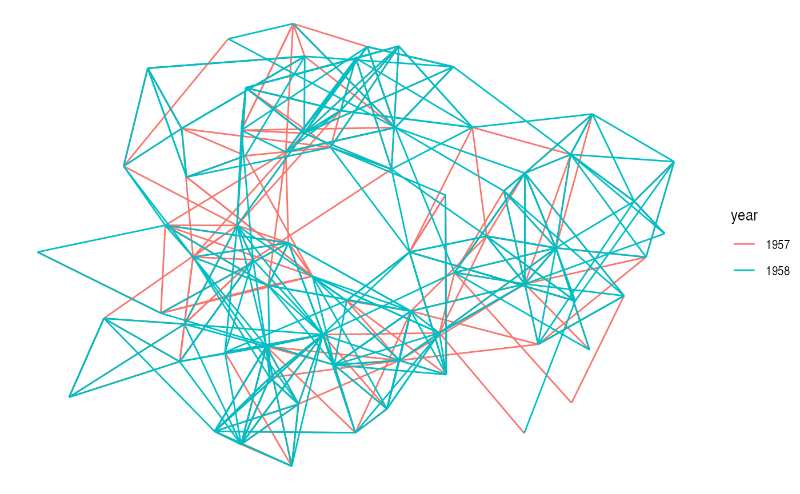
Parallel
An alternative to geom_edge_fan() is geom_edge_parallel(). It will draw edges as straight lines but in the case of multi-edges it will offset each edge a bit so they run parallel to each other. As with geom_edge_fan() the edges will be sorted by direction first. The offset is done at draw time and will thus remain constant even during resizing:

Loops
Loops cannot be shown with regular edges as they have no length. A dedicated geom_edge_loop() exists for these cases:
# let's make some of the student love themselves
loopy_hairball <- hairball %>%
bind_edges(tibble::tibble(from = 1:5, to = 1:5, year = rep('1957', 5)))
ggraph(loopy_hairball, layout = 'stress') +
geom_edge_link(aes(colour = year), alpha = 0.25) +
geom_edge_loop(aes(colour = year))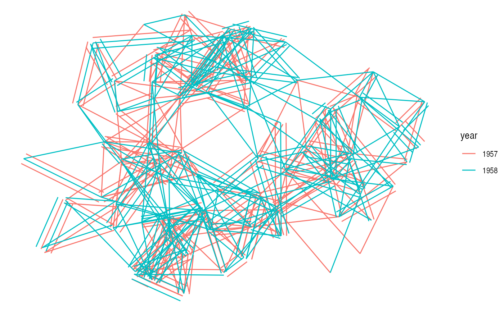
The direction, span, and strength of the loop can all be controlled, but in general loops will add a lot of visual clutter to your plot unless the graph is very simple.
Density
This one is definitely strange, and I’m unsure of it’s usefulness, but it is here and it deserves an introduction. Consider the case where it is of interest to see which types of edges dominates certain areas of the graph. You can colour the edges, but edges can tend to get overplotted, thus reducing readability. geom_edge_density() lets you add a shading to your plot based on the density of edges in a certain area:
ggraph(hairball, layout = 'stress') +
geom_edge_density(aes(fill = year)) +
geom_edge_link(alpha = 0.25)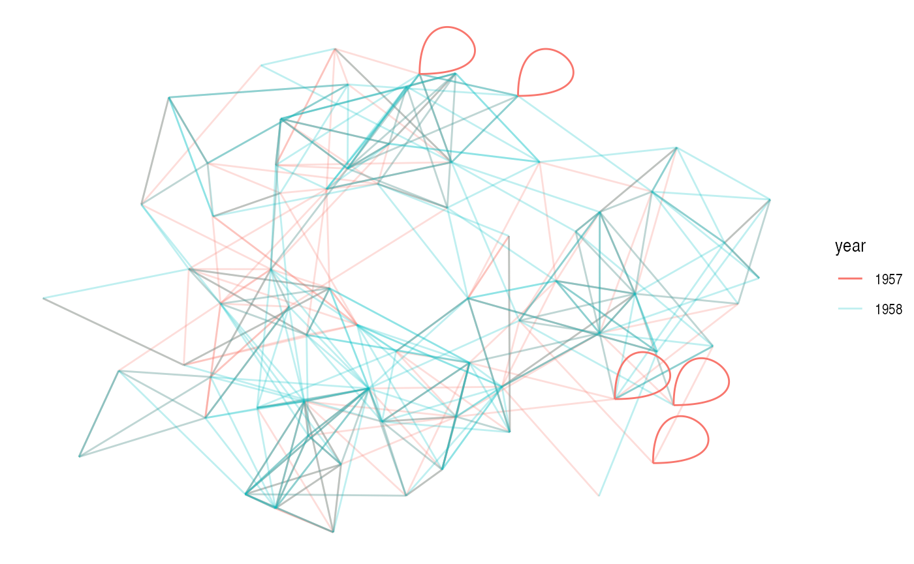
Arcs
While some insists that curved edges should be used in standard “hairball” graph visualisations it really is a poor choice, as it increases overplotting and decreases interpretability for virtually no gain (unless complexity is your thing). That doesn’t mean arcs have no use in graph visualizations. Linear and circular layouts can benefit greatly from them and geom_edge_arc() is provided precisely for this scenario:
Arcs behave differently in circular layouts as they will always bend towards the center no matter the direction of the edge (the same thing can be achieved in a linear layout by setting fold = TRUE).
ggraph(hairball, layout = 'linear', circular = TRUE) +
geom_edge_arc(aes(colour = year)) +
coord_fixed()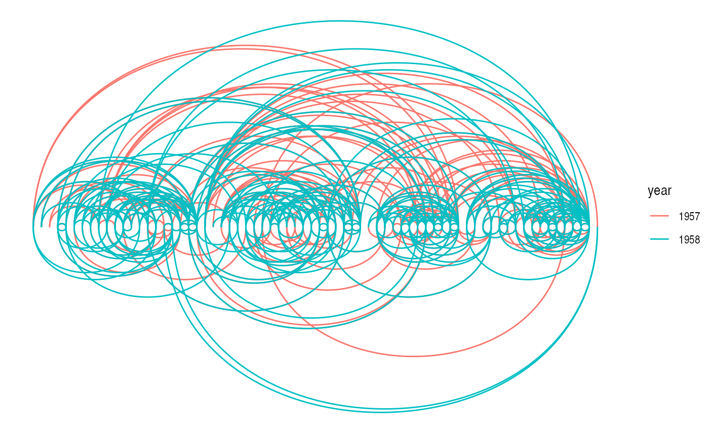
Elbow
Aah… The classic dendrogram with its right angle bends. Of course such visualizations are also supported with the geom_edge_elbow(). It goes without saying that this type of edge requires a layout that flows in a defined direction, such as a tree:
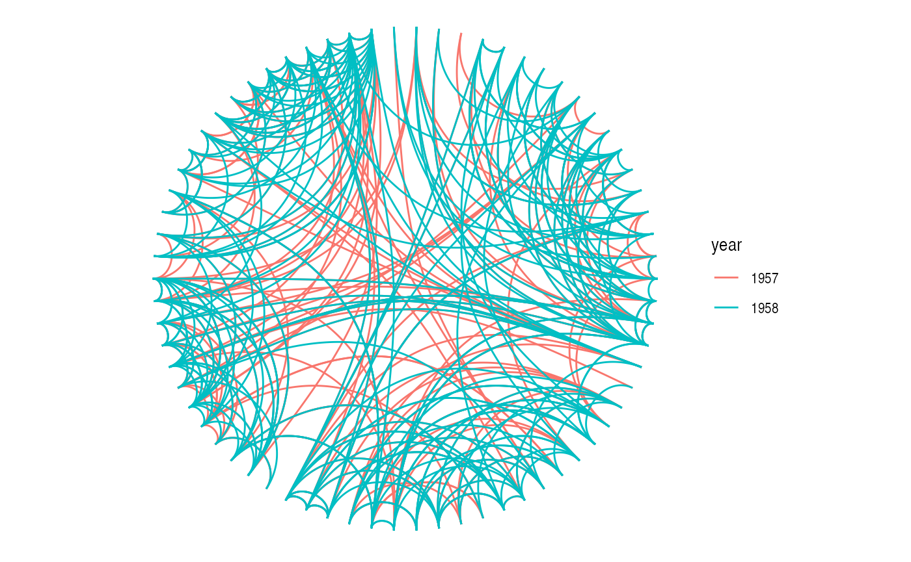
Diagonals
If right angles aren’t really your thing ggraph provides a smoother version in the form of geom_edge_diagonal(). This edge is a quadratic bezier with control points positioned at the same x-value as the terminal nodes and halfway in-between the nodes on the y-axis. The result is more organic than the elbows:
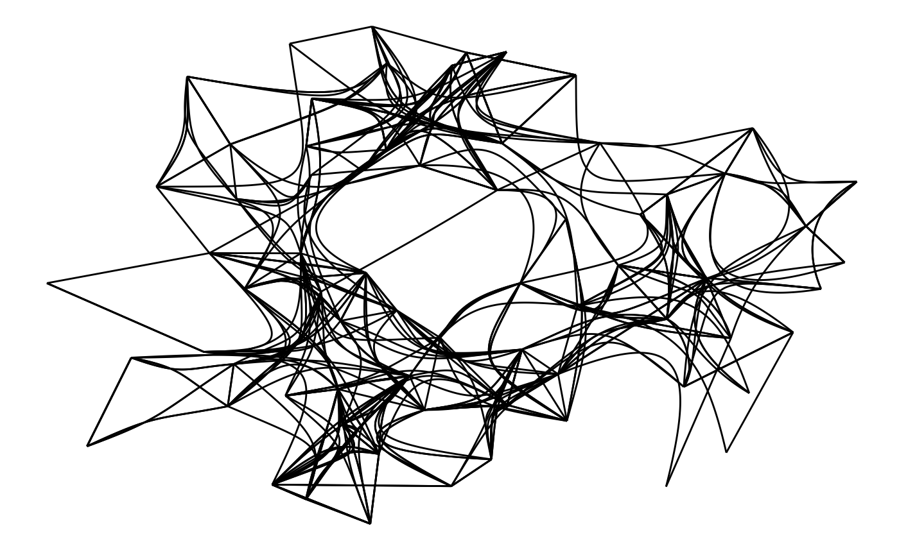
It tends to look a bit weird with hugely unbalanced trees so use with care…
Bends
An alternative to diagonals are bend edges which are elbow edges with a smoothed corner. It is implemented as a quadratic bezier with control points at the location of the expected elbow corner:
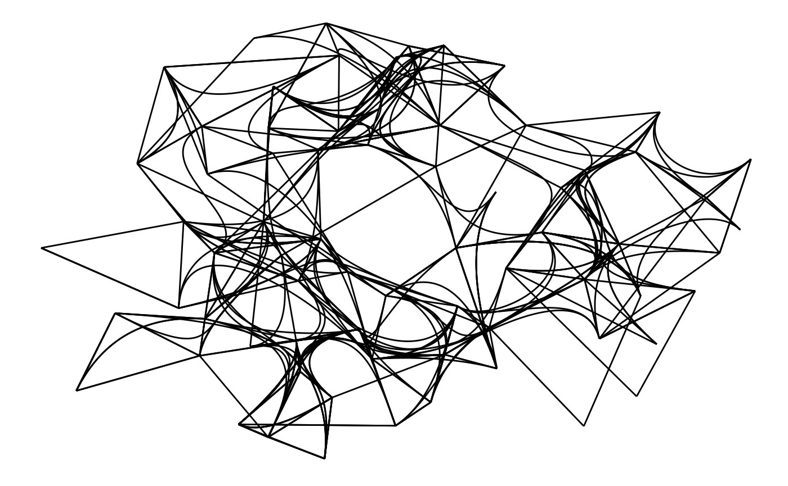
Hive
This is certainly a very specific type of edge, intended only for use with hive plots. It draws edges as quadratic beziers with control point positioned perpendicular to the axes of the hive layout:
ggraph(hairball, layout = 'hive', axis = pop_devel, sort.by = popularity) +
geom_edge_hive(aes(colour = year)) +
geom_axis_hive(label = FALSE) +
coord_fixed()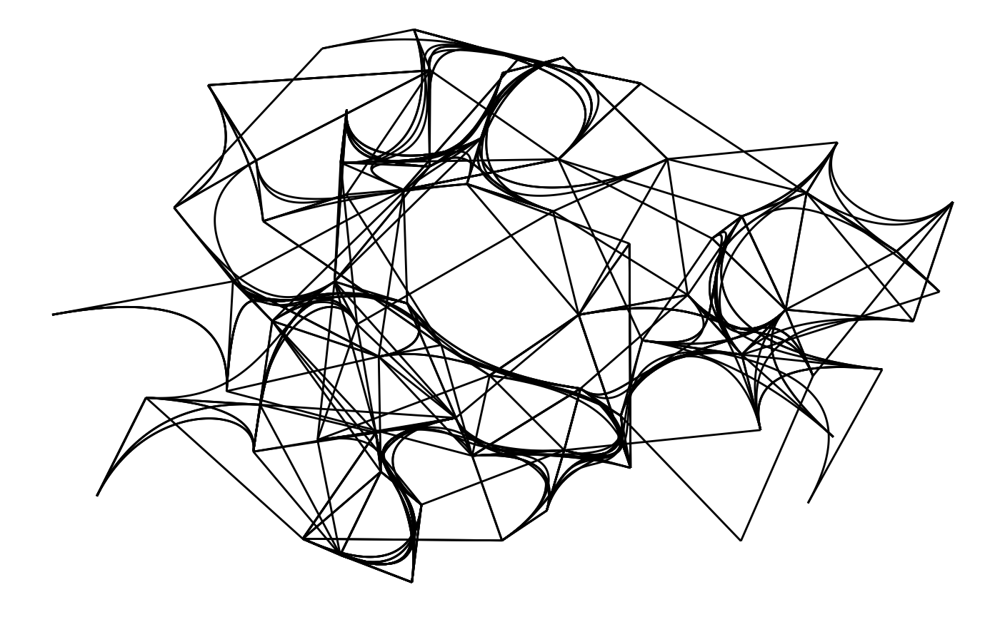
Span
As with the hive edge the geom_edge_span() is made in particular for a specific layout - the fabric layout. It draws the edge as a vertical line connecting the horizontal node lines of the layout, potentially with a terminal shape.
ggraph(hairball, layout = 'fabric', sort.by = node_rank_fabric()) +
geom_node_range(colour = 'grey') +
geom_edge_span(end_shape = 'circle') +
coord_fixed()
Point and tile
It may seem weird to have edge geoms that doesn’t have any span, but the matrix layout calls for exactly that. The terminal nodes of the edge are determined by the vertical and horizontal position of the mark, and for that reason the geom doesn’t need any extend. The point and tile geoms serve the same purpose but are simply different geometry types:
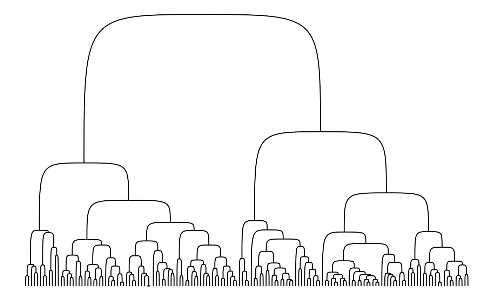
The three types of edge geoms
Almost all edge geoms comes in three variants. The basic variant (no suffix) as well as the variant suffixed with 2 (e.g. geom_edge_link2()) calculates a number (n) of points along the edge and draws it as a path. The variant suffixed with 0 (e.g. geom_edge_diagonal0()) uses the build in grid grobs to draw the edges directly (in case of a diagonal it uses bezierGrob()). It might seem strange to have so many different implementations of the same geoms but there’s a reason to the insanity…
Base variant
The basic edge geom is drawn by calculating a number of points along the edge path and draw a line between these. This means that you’re in control of the detail level of curved edges and that all complex calculations happens up front. Generally you will see better performance using the base variant rather than the 0-variant that uses grid grobs, unless you set the number of points to calculate to something huge (50–100 is usually sufficient for a smooth look). Apart from better performance you also get a nice bonus (you actually get several, but only one is discussed here): The possibility of drawing a gradient along the edge. Each calculated point gets an index value between 0 and 1 that specifies how far along the edge it is positioned and this value can be used to e.g. map to an alpha level to show the direction of the edge:
ggraph(hairball, layout = 'linear') +
geom_edge_arc(aes(colour = year, alpha = stat(index))) +
scale_edge_alpha('Edge direction', guide = 'edge_direction')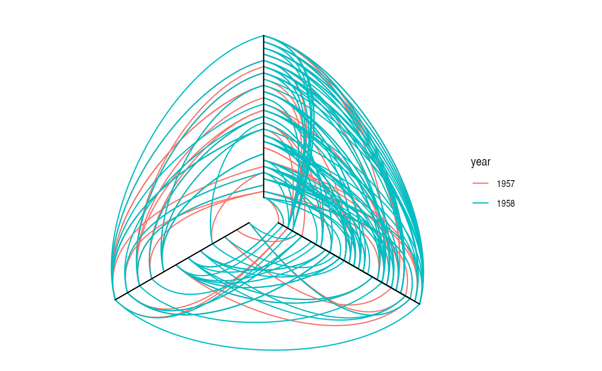
2-variant
Like the base variant the 2-variant calculates points along the edge and draws a path along them. The difference here is that in this variant you can map node attributes to the edge and the aesthetics are then interpolated along the edge. This is easier to show than to explain:
ggraph(hierarchy, layout = 'dendrogram', height = height) +
geom_edge_elbow2(aes(colour = node.Class))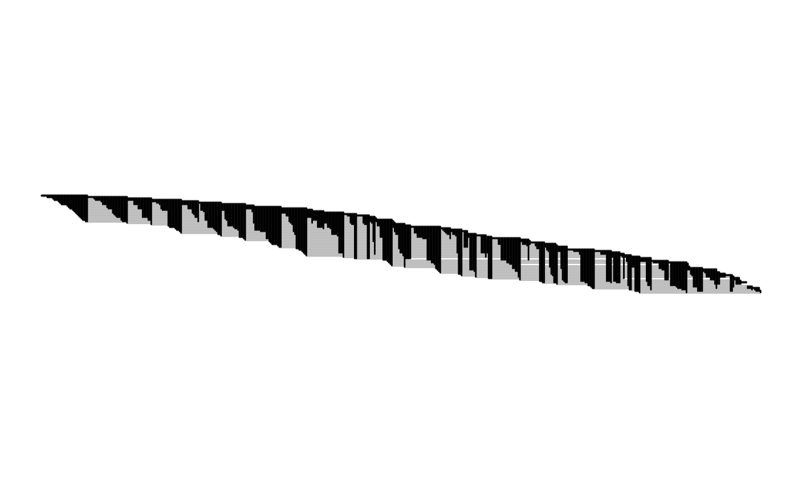
There are considerably more computation going on than in the base variant so unless you need to interpolate values between the terminal nodes you should go with the base variant.
Edge strength
Many of the edge geoms takes a strength argument that denotes their deviation from a straight line. Setting strength = 0 will always result in a straight line, while strength = 1 is the default look. Anything in between can be used to modify the look of the edge, while values outside that range will probably result in some weird looks. Some examples are shown below:
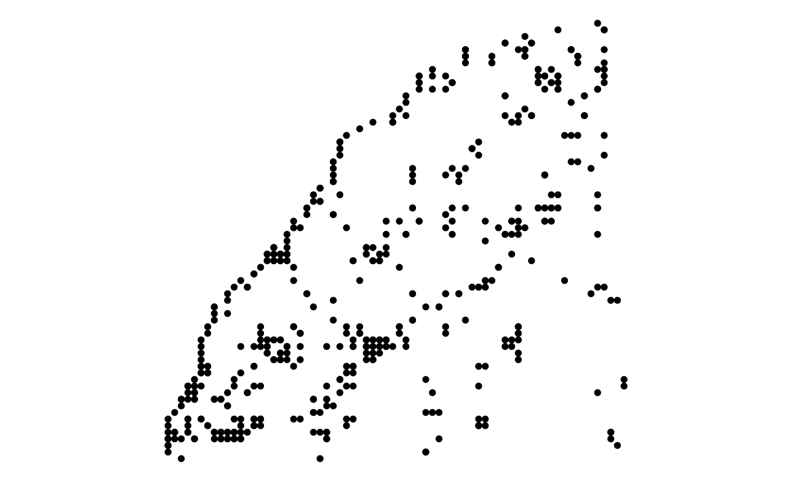
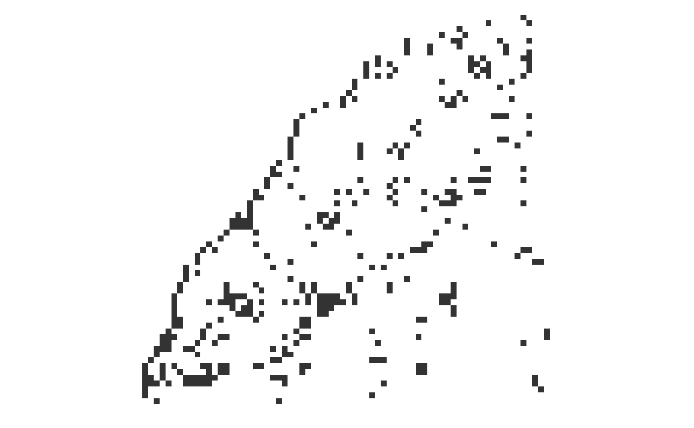
Decorating edges
An edge is so much more than a line… Well at least it is also potentially an arrow and a label. This section will go into how these can be added. To clearly see the effect here we will use a slightly simpler graph
# Random names - I swear
simple <- create_notable('bull') %>%
mutate(name = c('Thomas', 'Bob', 'Hadley', 'Winston', 'Baptiste')) %>%
activate(edges) %>%
mutate(type = sample(c('friend', 'foe'), 5, TRUE))Arrows
While we saw above that direction can be encoded as a gradient, the good old arrow is still available. As with the standard ggplot2 geoms an arrow can be added using the arrow argument:
ggraph(simple, layout = 'graphopt') +
geom_edge_link(arrow = arrow(length = unit(4, 'mm'))) +
geom_node_point(size = 5)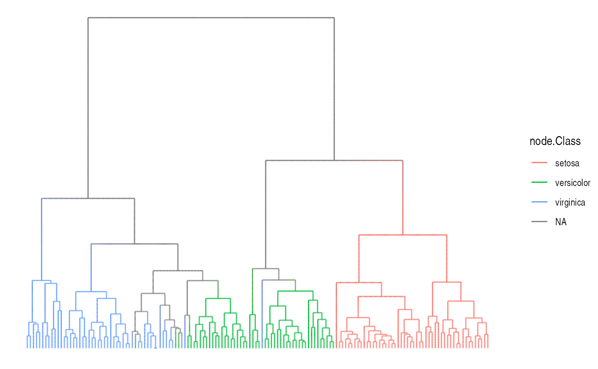
I hope you think Ugh at the sight of this. The edges naturally extend to the node center and nodes are thus drawn on top of the arrow heads. There’s a solution to this in the form of the start_cap and end_cap aesthetics in the base and 2-variant edge geoms (sorry 0-variant). This can be used to start and stop the edge drawing at an absolute distance from the terminal nodes. Watch this:
ggraph(simple, layout = 'graphopt') +
geom_edge_link(arrow = arrow(length = unit(4, 'mm')),
end_cap = circle(3, 'mm')) +
geom_node_point(size = 5)
Using the circle(), square(), ellipsis(), and rectangle() helpers it is possible to get a lot of control over how edges are capped at either end. This works for any edge, curved or not:
ggraph(simple, layout = 'linear', circular = TRUE) +
geom_edge_arc(arrow = arrow(length = unit(4, 'mm')),
start_cap = circle(3, 'mm'),
end_cap = circle(3, 'mm')) +
geom_node_point(size = 5) +
coord_fixed()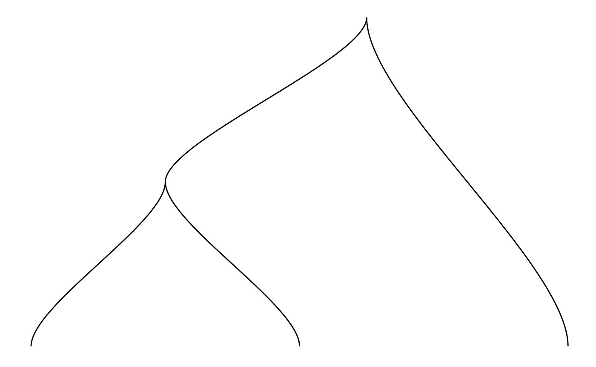
When plotting node labels you often want to avoid that incoming and outgoing edges overlaps with the labels. ggraph provides a helper that calculates the bounding rectangle of the labels and cap edges based on that:
ggraph(simple, layout = 'graphopt') +
geom_edge_link(aes(start_cap = label_rect(node1.name),
end_cap = label_rect(node2.name)),
arrow = arrow(length = unit(4, 'mm'))) +
geom_node_text(aes(label = name))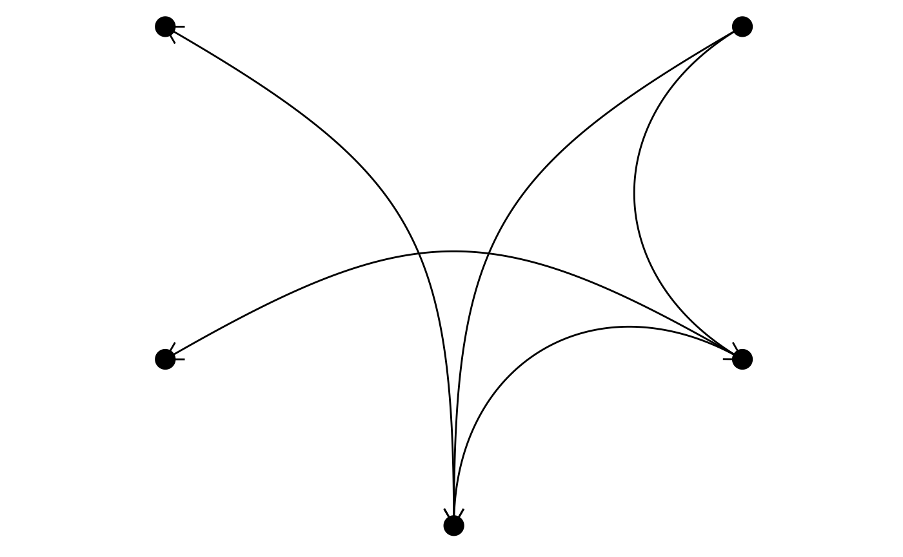
The capping of edges is dynamic and responds to resizing of the plot so the absolute size of the cap areas are maintained at all time.
A quick note on directionality
In ggraph there is no such thing as an undirected graph. Every edge has a start and an end node. For undirected graphs the start and end of edges is arbitrary but still exists and it is thus possible to add arrowheads to undirected graphs as well. This should not be done of course, but this is the responsibility of the user as ggraph does not make any checks during rendering.
Labels
You would expect that edge labels would be their own geom(s), but ggraph departs from the stringent grammar interpretation here. This is because the label placement is dependent on the choice of edge. Because of this edge labeling is bundled with each edge geom (but not the 0-variant) through the label aesthetic
ggraph(simple, layout = 'graphopt') +
geom_edge_link(aes(label = type),
arrow = arrow(length = unit(4, 'mm')),
end_cap = circle(3, 'mm')) +
geom_node_point(size = 5)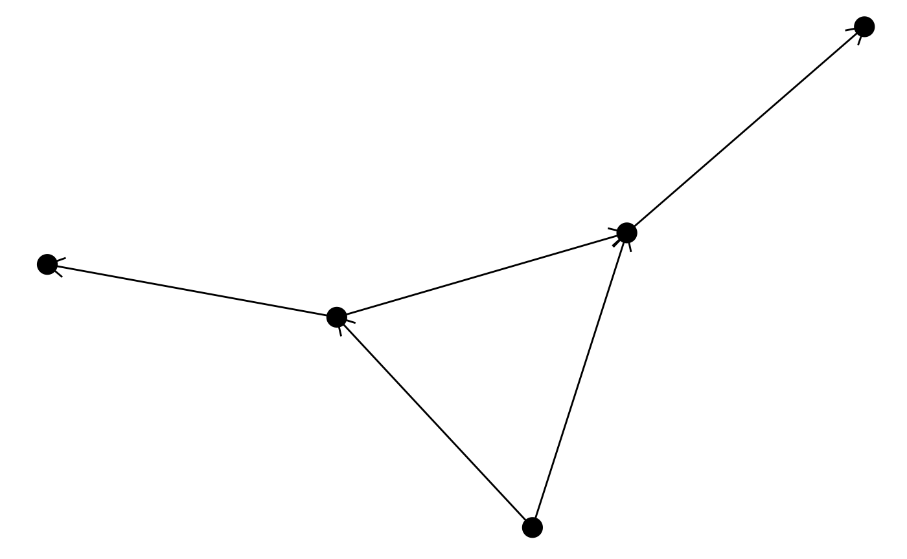
Usually you would like the labels to run along the edges, but providing a fixed angle will only work at a very specific aspect ratio. Instead ggraph offers to calculate the correct angle dynamically so the labels always runs along the edge. Furthermore it can offset the label by an absolute length:
ggraph(simple, layout = 'graphopt') +
geom_edge_link(aes(label = type),
angle_calc = 'along',
label_dodge = unit(2.5, 'mm'),
arrow = arrow(length = unit(4, 'mm')),
end_cap = circle(3, 'mm')) +
geom_node_point(size = 5)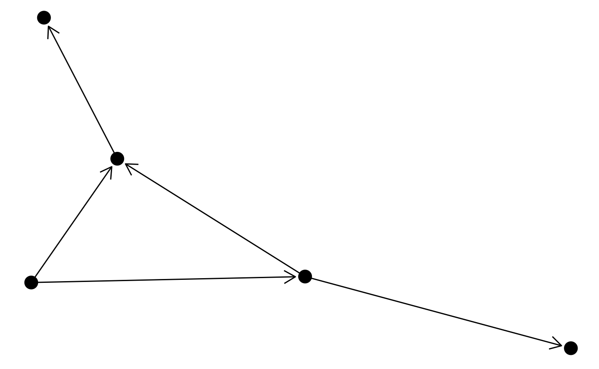
ggraph offers a lot of additional customization of the edge labels but this shows the main features. As with arrowheads labels can severely clutter your visualization so it is only advisable on very simple graphs.
Connections
The estranged cousin of edges are connections. While edges show the relational nature of the nodes in the graph structure, connections connect nodes that are not connected in the graph. This is done by finding the shortest path between the two nodes. Currently the only connection geom available is geom_conn_bundle() that implements the hierarchical edge bundling technique:
flaregraph <- tbl_graph(flare$vertices, flare$edges)
from <- match(flare$imports$from, flare$vertices$name)
to <- match(flare$imports$to, flare$vertices$name)
ggraph(flaregraph, layout = 'dendrogram', circular = TRUE) +
geom_conn_bundle(data = get_con(from = from, to = to), alpha = 0.1) +
coord_fixed()The connection concept is underutilized at the moment but I expect to add more support for this in coming releases.